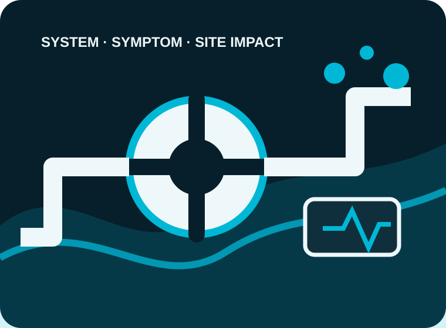

Booster and pressurisation sets
Verified capability presented with a clear route into the right enquiry workflow.
A water-flow concept for emergency diagnosis, installations and planned maintenance across commercial and industrial sites.

Only services supported by the business’s public information are used in this concept.
Verified capability presented with a clear route into the right enquiry workflow.
Verified capability presented with a clear route into the right enquiry workflow.
Verified capability presented with a clear route into the right enquiry workflow.
Verified capability presented with a clear route into the right enquiry workflow.
The current website has strong service and project material, but visible template remnants—including generic construction wording, inconsistent system/client statistics and placeholder testimonial text—undermine trust. The contact form also does not visibly classify system type, outage impact, alarm status, BMS connection, access or maintenance history.
A technical pump-support website with urgent/planned routing, system qualification, photo and document upload, CRM assignment, missed-enquiry follow-up, planned-maintenance reminders and service-area SEO.
The form gives engineers the system context before the callback.